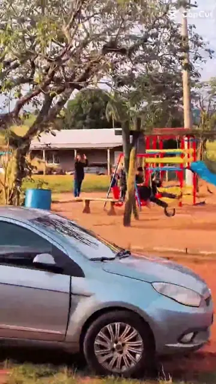

Doar em dinheiro
Em breve, contribuições pelo Asaas com confirmação e histórico no seu cadastro.
Pagamento online em preparaçãoSITE OFICIAL DA COMUNIDADE · SÃO BENEDITO
AMOR + DOAÇÃO = SORRISOS E ESPERANÇA
Sua doação vira sorriso. Uma rede independente de moradores e voluntários que acolhe famílias, crianças e pessoas em situação de vulnerabilidade no bairro São Benedito.
FAÇA PARTE DESSA HISTÓRIA
Escolha como contribuir. Estamos preparando uma área segura para cadastro de doadores, pagamentos e acompanhamento das contribuições.
Em breve, contribuições pelo Asaas com confirmação e histórico no seu cadastro.
Pagamento online em preparaçãoAlimentos, brinquedos e itens essenciais fazem a diferença em nossas ações.
Conhecer as ações →Seu tempo e sua dedicação também podem transformar vidas.
Conheça nosso projeto →Alimentos, brinquedos, roupas ou apoio voluntário podem mudar o dia de alguém.
Acompanhe o que já arrecadamos, o que ainda falta e onde cada item será entregue.
Cada doação se transforma em cuidado, respeito e alegria para quem recebe.
NOSSA RAIZ
Um sonho de Tainara e Joice que se transformou em cuidado com o bairro São Benedito.
TAINARA E JOICE
Nossa história nasceu do sonho de Tainara e sua esposa, Joice, de fazer o bem e ajudar o próximo. Com fé, elas sentiram que Deus colocou em seus corações a missão de transformar esse desejo em ações de amor, cuidado e acolhimento.
Elas escolheram começar por São Benedito, onde Joice foi criada e mantém fortes vínculos com moradores, famílias e com a história do lugar.

POR QUE SÃO BENEDITO?
São Benedito fica distante da área urbana e, segundo a experiência dos moradores, ainda conta com poucos recursos públicos voltados às necessidades locais. Mesmo assim, o bairro mantém uma identidade forte, com famílias que se conhecem e preservam laços de solidariedade.
Foi essa realidade, unida ao vínculo afetivo de Joice com o lugar, que motivou Tainara e Joice a concentrarem ali as primeiras ações.
MEMÓRIA DA COMUNIDADE
De acordo com a história transmitida pelos moradores, São Benedito se formou em uma área doada por um fazendeiro à igreja, que na época ajudou a organizar a divisão das terras.
Esse relato faz parte da memória oral da comunidade. Hoje, a rede Doe Amor, Espalhe Alegria ajuda a escrever um novo capítulo dessa história por meio de ações independentes e sem vínculo político.
NOSSA REDE DE APOIO
Depois da iniciativa de Tainara e Joice, o projeto recebeu a ajuda dos clientes do banho e tosa que elas mantêm na cidade de Marília, onde vivem atualmente. Cada doação e cada gesto ajudaram a transformar a ideia em ações reais para São Benedito.
REGISTROS PÚBLICOS SOBRE O BAIRRO
Embora os moradores relatem que os recursos disponíveis ainda são limitados, há registros públicos de iniciativas realizadas no bairro. Em setembro de 2021, equipes da Saúde da Família, Esporte Social, CRAS e Assistência Social promoveram atividades, atendimento de saúde, vacinação, teatro, brincadeiras e entrega de doces em São Benedito.
O portal municipal também registra uma palestra sobre ervas medicinais realizada no bairro rural de São Benedito. Esses documentos ajudam a confirmar a identidade do local e complementam a memória contada pelos moradores.
NOSSA TRAJETÓRIA
Cada evento registra o que foi feito, o que foi arrecadado e quem foi alcançado.
DEZEMBRO DE 2025
O primeiro grande encontro da comunidade levou presentes, doces, alimentos e acolhimento a todas as pessoas presentes.
5 DE ABRIL DE 2026
Uma manhã de carinho preparada especialmente para as crianças do bairro.
MAIO DE 2026
Uma homenagem carinhosa às mães da comunidade, celebrando cuidado, força e amor.
AGOSTO DE 2026
A comunidade se reuniu para reconhecer e homenagear os pais e responsáveis.
20 DE JUNHO DE 2026
Uma noite de união, comidas típicas, brincadeiras e alegria. Os alimentos foram compartilhados com todas as pessoas presentes.
11 DE OUTUBRO DE 2026
A próxima grande ação está sendo preparada para cerca de 300 pessoas, com brinquedos, doces, alimentos e muita alegria.
ÁREA DE ORGANIZAÇÃO
Controle de parceiros, doações, tarefas e andamento da próxima ação.
Entre na sua conta para guardar os dados no Supabase e acessá-los em outros aparelhos.
DIA DAS CRIANÇAS 2026
Veja como cada gesto está ajudando a construir esse dia especial.
ANDAMENTO GERAL
PRÓXIMOS PASSOS
PRAZOS
REDE DE APOIO
Registre quem pode ajudar, o contato feito e cada resposta recebida.
SUA DOAÇÃO VIRA SORRISO
Acompanhe o que falta e registre cada contribuição recebida.
DOAÇÃO EM DINHEIRO
TRANSPARÊNCIA
Os anexos ficam guardados neste navegador. Para acessar em outro aparelho, envie ou baixe também o arquivo original da nota.
DIVISÃO DO TRABALHO
Distribua responsabilidades e acompanhe o que já avançou.